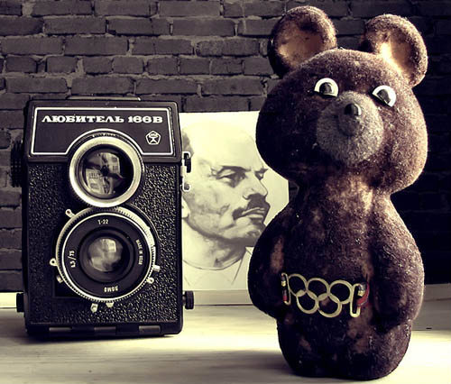

Раньше было лучше?

В этой статье попробуем разобраться, что такое ностальгия.
Начнем с определения
Ностальгия (от др.-греч. νόστος — возвращение на родину и άλγος — боль, печаль ) – грусть о прошедших временах, местах или событиях, с которыми связаны приятные воспоминания. Она часто возникает при удалении, пространственном (эмиграция), или временном (взрослые люди вспоминают о своем детстве как о «золотой» поре жизни). Интенсивность переживаний варьируется от легкой грусти (например, о «старых добрых временах») до клинических симптомов в виде бессонницы, отсутствия аппетита и навязчивого желания попасть в заветное место.
Понятие ввел шведский врач Йоханнес Хофер в 1688 году в своей диссертации, когда описывал заболевание солдат, дислоцирующихся в чужих странах. Пациенты были в агонии, но, попав домой, чудесным образом излечились. Подобные случаи повторялись у эмигрантов, тогда врачи и философы объяснили это «передвижением животного духа», который как-то привязан к родной земле.
Из-за чего мы испытывает это чувство
Исследования показали, что человек больше вспоминает те песни/фильмы/книги, которые он потреблял в позднем подростковом возрасте, а не в раннем детстве или после совершеннолетия. Опросы студентов в Саутгемптонском университете показали, что в 40% случаев причина ностальгии — одиночество. Воспоминания о временах, когда человеку было хорошо, служат защитной реакцией при расставании с близкими людьми, которая помогает не только выстоять в момент одиночества, но и выбраться из этого состояния. Ностальгия поднимает настроение и в итоге повышает социальную активность человека.
Самые частые предметы ностальгии — какие-то конкретные события, например, день рождения, отпуск или медовый месяц. Они почти всегда вызывают позитивные эмоции, в моменты ностальгии мы вспоминаем лучшие моменты своей жизни. Бывшая биатлонистка Саша в ответ на вопрос о том, что вызывает у нее ностальгию, ответила так: «Я скучаю по простой спортивной логике, когда ты лучший по результатам и твое лидерство оспаривают только в твоем виде. Когда пловец не спорит с боксером за первое место. Ты либо выиграл, либо проиграл. Вообще, этой черно-белости ужасно не хватает в ситуации, когда ты только и делаешь, что целыми днями различаешь оттенки и смыслы. А еще по сборам и бесконечным тренировкам».
Правда ли, что раньше было лучше?
В редакции «Теорий и практик» главными объектами ностальгии стали предметы и места, связанные с детством: козинаки из воздушного риса, тетрис, поездки на дачу с бабушкой, поездки с папой на «Жигулях» с мокрыми после бассейна волосами. Это вовсе не значит, что раньше было лучше, чем сейчас — просто мы так все запомнили. Если вернуться к предметам воспоминаний, можно серьезно разочароваться, ведь с течение времени изменились вы и весь мир вокруг. Играть в Марио 85 года не так захватывающе, потому что у вас на самом деле давно поменялись интересы, да и лучших способов развлечься достаточно. Зато об этом приятно вспоминать.


{kind=link}
{kind=link}